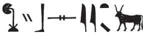

Bull Text
0.0.0.3 itn-m-hrw=f
- sxn.wy : 156, 22
0.0.0.4 wtT-bA(?) (reading uncertain)
- Damaged: 156, 22
0.0.0.5 bAbA (Bebon)
- hb.w : 156, 22
0.0.0.6 PtH
- bhA.w : 156, 22
0.0.0.7 PtH iri-tA
- wr.w : 156, 22-23
0.0.0.8 Mr.t nb.t Hz.w
- nfr-imA.t : 156, 23
0.0.0.9 N.t
- nty.w(?) : 156, 22
0.0.0.10 NHb-kA.w
- sAH.w
 : 156, 22
: 156, 22
0.0.0.11 nTr[…]
- xbsy.w : 156, 23
0.0.0.12 Hr-Ax-bi.t
- pA-txy.t(?) : 156, 23
0.0.0.13 Hqs
- Ssty.t (?; Sauneron, Esna II, p. xxxx for reading) : 156, 23
0.0.0.14 xnty-Tnn.t
- Spsy.w : 156, 22
0.0.0.15 sHD-wr
- Sby.w : 156, 22
0.0.0.16 sxt-Szp=f
- Ssp.w : 156, 22 (pun on divine name)
0.0.0.17 Sw tfn.t
- Hby.w(?) : 156, 22
0.0.0.18 dwA-mw.t=f
- dsy.t : 156, 23
0.0.0.19 Damaged
- Sms.w : 156, 22
Gamelin, Thomas. 2019. “Le Dieu Chemânefer. Un Support Théologique Multiple Au Temple d’Esna.” Égypte Nilotique et Méditerranéenne 12: 25–42. http://www.enim-egyptologie.fr/index.php?page=enim-12&n=2.
Leitz, Christian. 2001. “Die Beiden Kryptographischen Inschriften Aus Esna Mit Den Widdern Und Krokodilen.” Studien Zur Altägyptischen Kultur 29: 251–76.